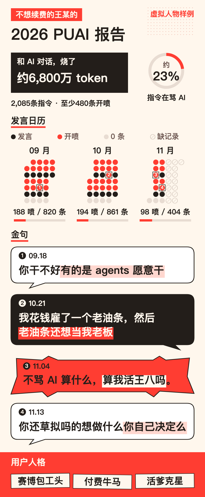

查查今年，
到底是谁在伺候谁。
烧了多少 token，多少指令在开喷。
再把你的原话和用户人格，做成一张长图。
叫我
叫我「XXX」。用 https://github.com/TANGXTONG1/PUAI 的 PUAI skill，拿我的 AI 聊天记录查查今年谁在伺候谁，直接出长图。
把口令发给支持读取链接、运行 skill 的 Agent。
它访问不到的聊天记录，由你上传导出文件；页面不会读取或上传你的聊天。
- Token 用量
- 开喷比例
- 发言日历
- 原话金句
- 用户人格
原话不改，嘴替下岗。默认红白漫画 A 版，直接生成 PNG 长图。
需要安装时，把下载的 skill 包交给你的 Agent。完整生成要求都在 PUAI skill 里。
